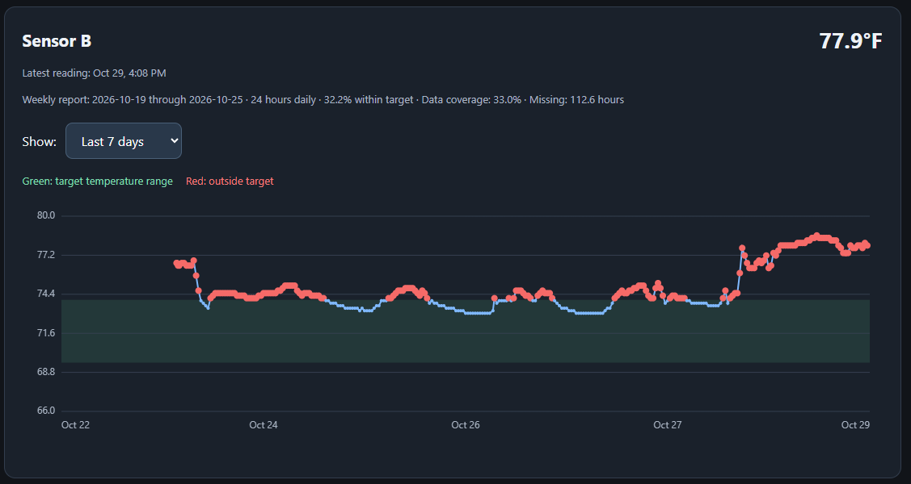
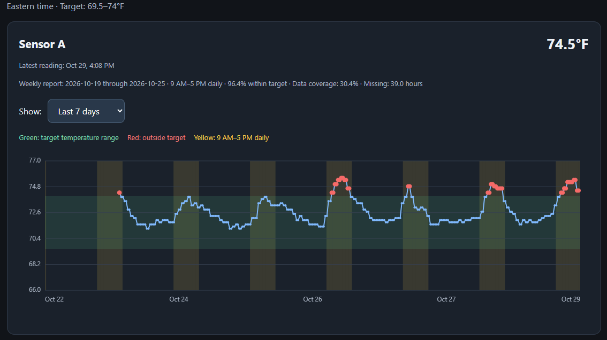

API Integration · Data Engineering · Monitoring
Temperature Monitoring with the Govee API
I built an automated system that turns temperature sensor readings into historical graphs and weekly reports. It helps identify recurring temperature changes and measure how consistently conditions stay within a defined target range.
The operational problem
A current temperature reading cannot explain what happened overnight or reveal a pattern across several days. I wanted a consistent record that could help staff investigate temperature concerns without manually checking and recording each sensor.
The system monitors two sensors against a target of 69.5–74°F. Sensor A is evaluated from 9 a.m.–5 p.m. daily, while Sensor B is evaluated 24 hours a day.
How I built it
1. Collect readings through the Govee API
A scheduled Python notebook in Databricks requests current readings from the Govee API every 30 minutes. The API supplies the readings; the scheduled collection builds the history needed for analysis.
2. Store the temperature history
Each reading is saved with its collection timestamp and sensor information in a Delta table. This keeps the historical record available for analysis independently of the website.
3. Prepare and export the dashboard data
After a successful collection, a second notebook prepares recent readings and calculates the previous week's statistics. It sends a compact JSON export to Cloudflare KV using the Cloudflare API.
4. Display the dashboard
A Cloudflare Worker serves the dashboard, and JavaScript draws the graphs. Each sensor has its own selector for the last 24 hours, two days, or seven days. The website reads the exported copy, so opening a graph does not start a new Databricks job or request new readings from Govee.
Reading the graphs
- Blue line: recorded temperature readings.
- Green band: the 69.5–74°F target range.
- Red dots: readings outside the target range.
- Yellow columns: Sensor A's daily 9 a.m.–5 p.m. evaluation window, in Eastern time.


These are static screenshots using anonymous sensor labels. The graphs show a rolling seven-day period, while the weekly summaries cover the previous Monday–Sunday. The first report has partial coverage because collection began during that week.
Calculating the weekly report
The report estimates time within target using the intervals between readings. For intervals no longer than 90 minutes, the earlier reading represents the temperature until the next reading. Longer gaps are treated as missing data.
Only time inside each sensor's evaluation window is counted. The percentage is calculated as time within target divided by covered time. Data coverage and missing hours are shown separately, so missing readings are not counted as acceptable temperatures.
This is an estimate based on periodic readings; changes between measurements may not be captured.
Privacy and access
This public page uses anonymous sensor labels. The live dashboard is protected by Cloudflare Access and is available only to approved users. API credentials are stored in Databricks Secrets and are not included in the public website.
Authorized Dashboard AccessWhat this project demonstrates
API integration, scheduled data collection, historical storage, time-based analysis, missing-data handling, web visualization, and controlled access—connected into a working operational tool.